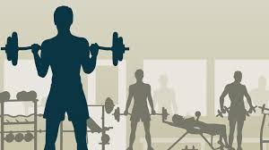

Over mij
Mijn naam is Stefan de Gier en kom uit Hendrik-Ido-Ambacht en ben 17 jaar oud. Ik ben een vrij serieuze werkende man. Mijn hobby's zijn gamen, relaxen en naar de sportschool gaan wat ik heel graag doe. Ik ga zo 5 keer per week naar de sportschool en ik ben van plan om er nog lang niet mee te stoppen. Mijn doel is om een goeie progammeur te worden en dan vervolgens naar het HBO te gaan om voor software engineer verder te gaan leren. Vervolgens bij een bedrijf werken met detach idee.
